The eight picks stay as they were, except for the §5 failures flagged in round 1. The Lab is the new work (see lab-round2.html for the chapter notes). Each "before" is round 1. Checks are marked ✓ pass, ~ partial, ✗ fail.
The lathe profiles were polylines, so heads and collars read as faceted at macro scale (visible on FaultLine). Gentle corners are now rounded and crisp steps kept; the bishop's mitre is a groove on the surface instead of a box that poked out. Crack and copper inlays follow the new surface.
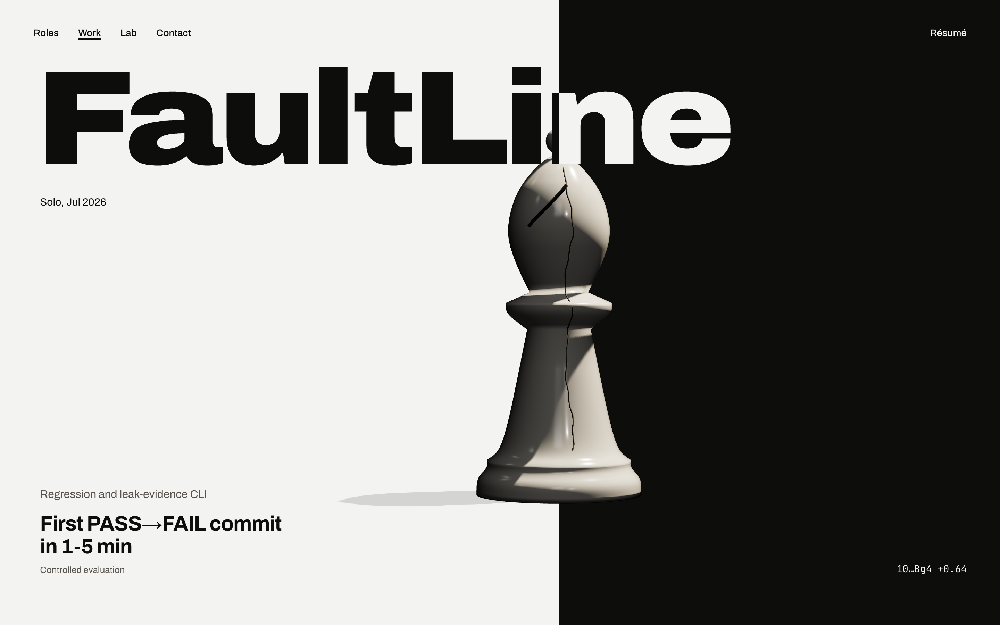
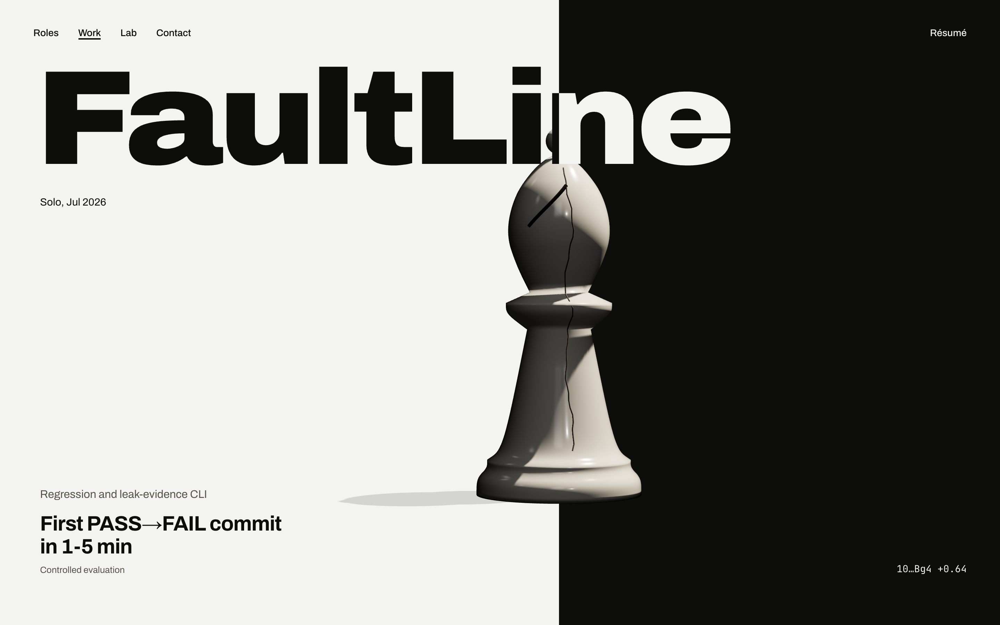
Round 1 failed §5 at about 50 words. Now 19 (nav aside): names only, in career order, with "now" on Deriv. Dates move to hover and to each role page. The two Monash rows are told apart by "degree" and "contract".
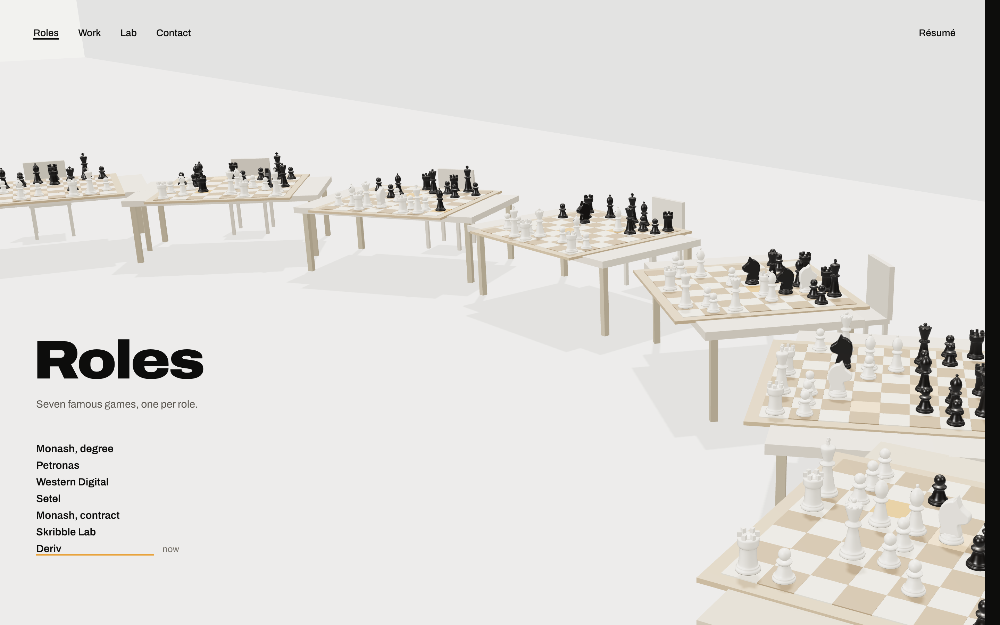
Seven chapters after the arrival (lab-a). Round 2 fixes to the draft: the spilled sheets in 02 now show their edges, and the heaps in 05 settle into piles instead of columns.
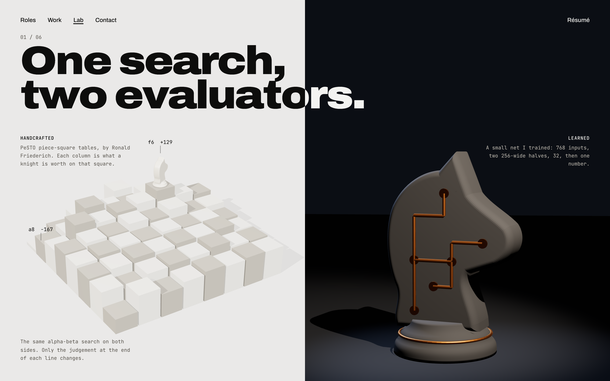
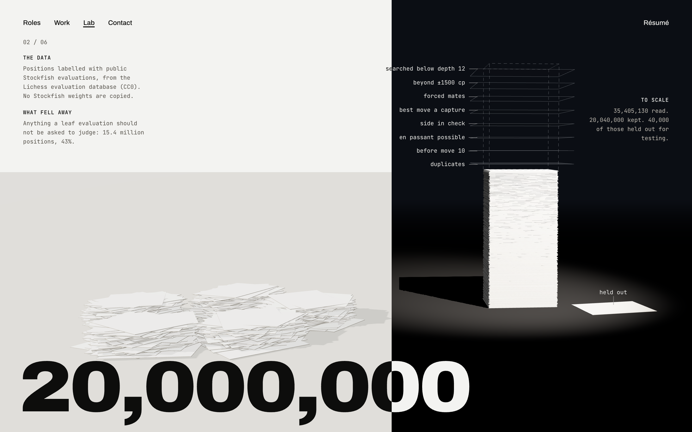
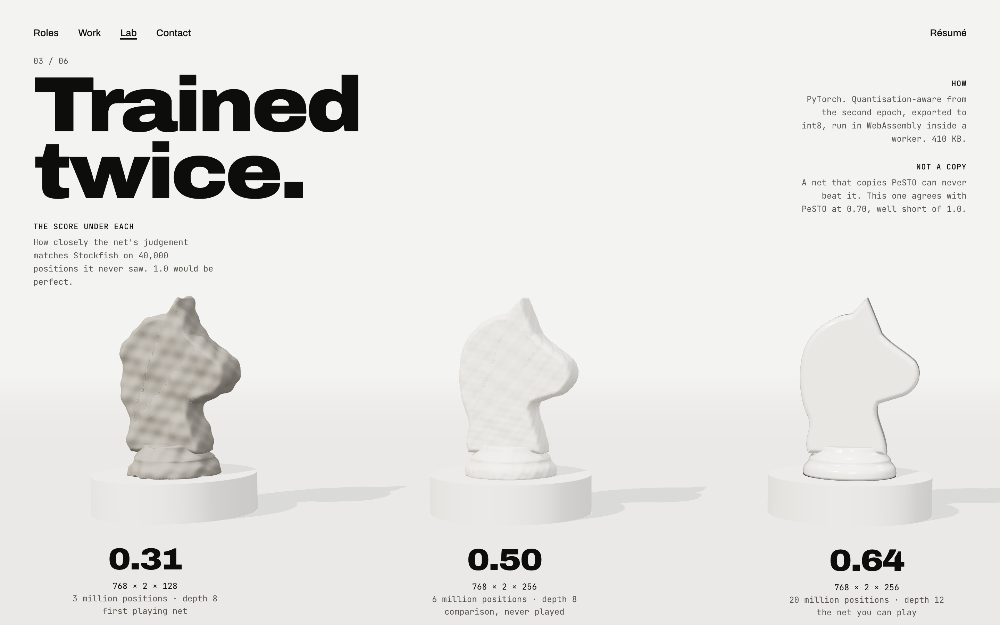
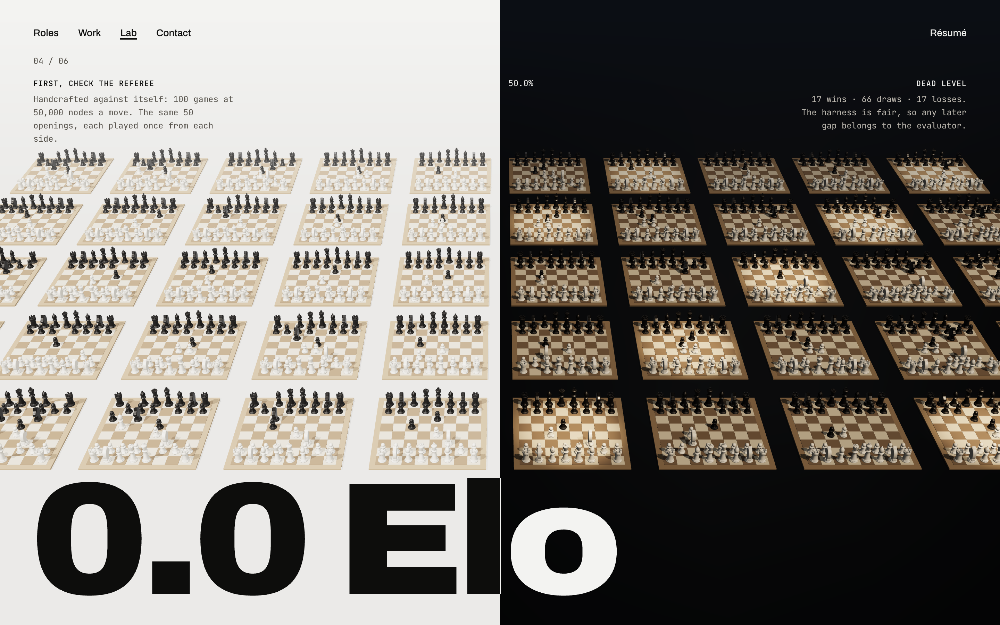
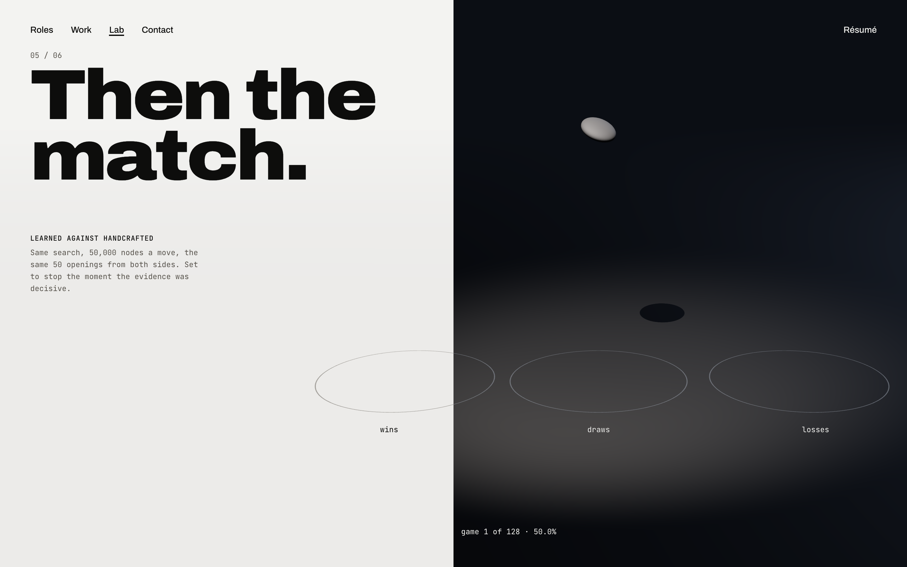
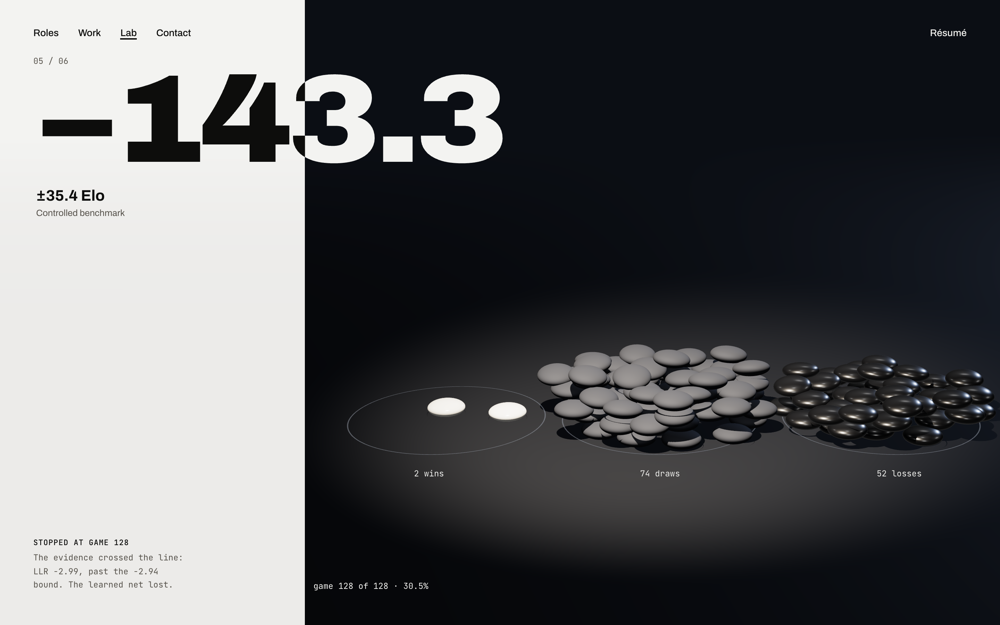
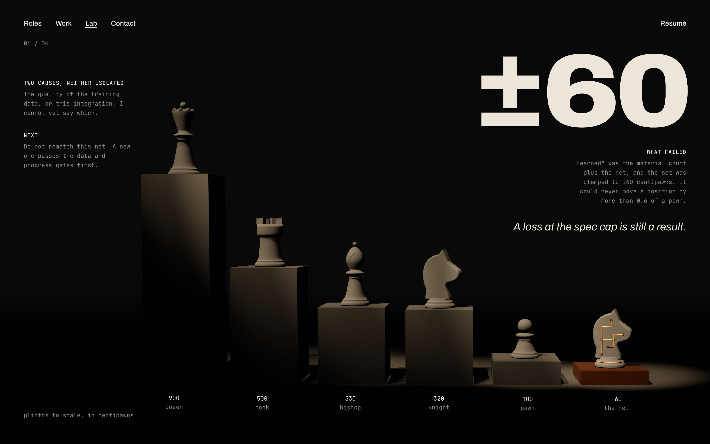
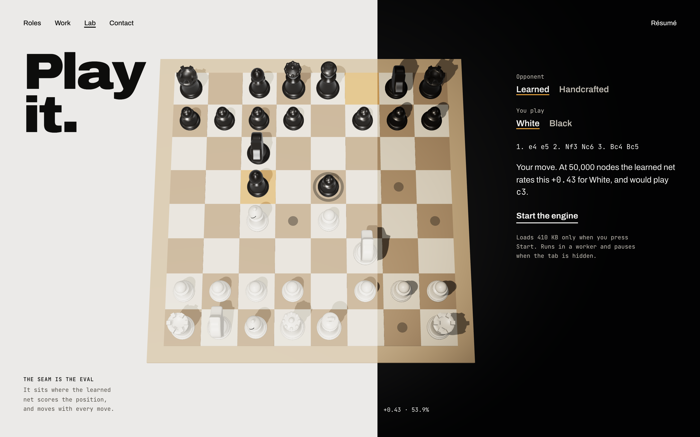
hero-a (and mobile), trans-b, work-c, role-a, lab-a and contact-a are as approved, re-rendered only for the new piece profiles.